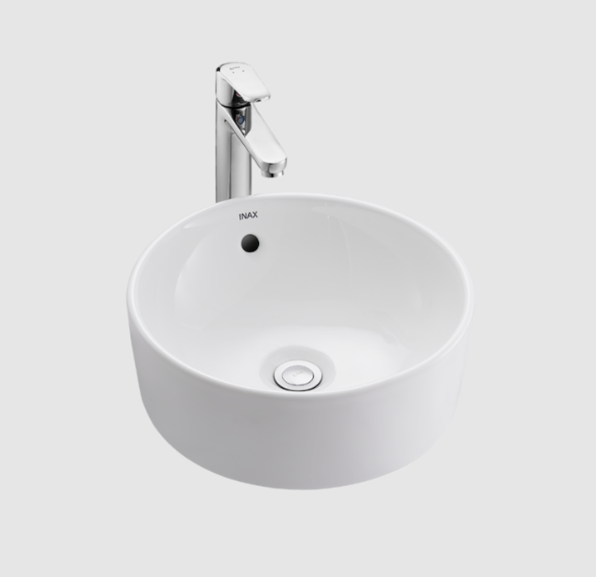
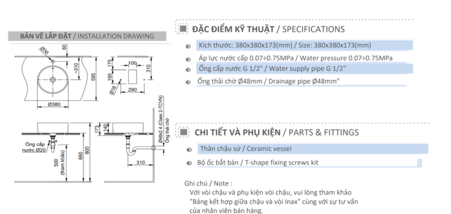

Chậu rửa mặt đặt bàn AL-295V là thiết bị vệ sinh chất lượng cao, có sự kết hợp hoàn hảo giữa thiết kế hiện đại và công nghệ tiên tiến, mang đến vẻ đẹp sang trọng và bền bỉ theo thời gian cho phòng tắm/phòng vệ sinh.Chậu rửa đặt bàn AL-295V: Sức hấp dẫn từ thiết kế tinh tếLà sản phẩm đặt nổi trên bàn, chậu rửa mặt AL-295V tạo nên điểm nhấn ấn tượng, phá vỡ sự đơn điệu của những mẫu chậu truyền thống. Kích thước chậu nhỏ gọn 380 x 173 x 380 mm (Rộng x Cao x Sâu), phù hợp với nhiều không gian khác nhau. Đường nét chậu được bo tròn mềm mại, uyển chuyển, mang đến cảm giác thoải mái khi sử dụng và tạo vẻ đẹp tinh tế, thanh lịch cho tổng thể phòng tắm/phòng vệ sinh.Công nghệ chống bám bẩn AQUA CERAMIC độc quyềnĐiểm sáng giá nhất của INAX AL-295V là lớp men sứ cao cấp được ứng dụng công nghệ AQUA CERAMIC độc quyền. Đây là giải pháp đột phá giúp bề mặt sứ luôn sáng bóng, sạch sẽ như mới suốt 100 năm. Với khả năng chống bám bẩn, công nghệ này cuốn trôi mọi vết ố, cặn bẩn chỉ trong một lần xả, giúp bạn vệ sinh dễ dàng hơn.Bên cạnh đó, chậu rửa đặt bàn AL-295V còn được trang bị lỗ xả tràn tiện lợi, ngăn ngừa tình trạng nước tràn ra sàn khi bạn quên tắt vòi, giúp tiết kiệm nước và bảo vệ môi trường.Lựa chọn đồng bộ cho không gian hoàn hảoĐể tối ưu hóa trải nghiệm và tạo sự đồng bộ về mặt thẩm mỹ, INAX gợi ý kết hợp chậu rửa mặt AL-295V với các sản phẩm vòi lavabo đi kèm. Bạn có thể lựa chọn sen vòi đơn LFV-5012SH cho phong cách tối giản, hiện đại hoặc vòi chậu rửa mặt nóng lạnh LFV-652SH để tăng thêm sự tiện nghi và sang trọng.Video giới thiệu chậu rửa đặt bàn AL-295VVideo giới thiệu chậu rửa INAXBản vẽ lắp đặt chậu rửa đặt bàn AL-295VHướng dẫn sử dụng chậu rửa đặt bàn AL-295VĐể giữ cho sản phẩm sứ luôn sáng bóng và bền đẹp như mới, việc vệ sinh đúng cách là rất quan trọng. Bạn có thể sử dụng các loại chất tẩy rửa trung tính, có độ pH từ 5.5 - 7 như xà phòng, nước rửa tay hoặc nước rửa bát để làm sạch hàng ngày.Tuy nhiên, với công nghệ AQUA CERAMIC độc quyền, để duy trì hiệu quả chống bám bẩn lâu dài, bạn cần tránh một số loại chất tẩy rửa và dụng cụ vệ sinh sau đây:Chất tẩy rửa có tính kiềm mạnh (pH ≥ 11) hoặc chất tẩy rửa có chứa bột mài. Những chất này có thể làm hư hại, gây xước bề mặt men sứ, ảnh hưởng đến khả năng chống bẩn của công nghệ AQUA CERAMIC.Dụng cụ cọ rửa có tính mài mòn như chổi, miếng cọ rửa có gắn vật liệu cứng, sắc nhọn hoặc có tính mài mòn cao. Chúng sẽ gây ra các vết xước nhỏ trên bề mặt, làm mất đi độ bóng ban đầu của sản phẩm.Thông số kỹ thuậtChất liệuMen sứ cao cấp chuẩn Nhật, sáng bóng, dễ vệ sinhLoạiĐặt bànKích thước380 x 173 x 380 (mm) (Rộng x Cao x Sâu)Thương hiệuINAXĐặc điểm- Kiểu dáng: dạng đặt nổi trên bàn sang trọng - Thiết kế hiện đại, tinh tế - Chất liệu sứ cao cấp với công nghệ AQUA CERAMIC cho bề mặt sứ 100 năm sáng đẹp, hạn chế bám bẩn - Lỗ xả tràn tiện lợiMàu sắcTrắngKhác- Gợi ý sản phẩm đi kèm: sen vòi đơn LFV-5012SH, vòi chậu rửa mặt nóng lạnh LFV-652SH - Hotline tư vấn: 18006633Video về lịch sử INAX - thương hiệu đến từ Nhật Bản
Chậu rửa đặt bàn AL-295V
Chậu rửa thương hiệu INAX.
Đã cập nhật danh sách yêu thích.
DANH MỤC: Chậu rửa
MÃ SẢN PHẨM: AL-295V
DEPTH: mm
HEIGHT: mm
WIDTH: mm
Chậu rửa mặt đặt bàn AL-295V là thiết bị vệ sinh chất lượng cao, có sự kết hợp hoàn hảo giữa thiết kế hiện đại và công nghệ tiên tiến, mang đến vẻ đẹp sang trọng và bền bỉ theo thời gian cho phòng tắm/phòng vệ sinh.Chậu rửa đặt bàn AL-295V: Sức hấp dẫn từ thiết kế tinh tếLà sản phẩm đặt nổi trên bàn, chậu rửa mặt AL-295V tạo nên điểm nhấn ấn tượng, phá vỡ sự đơn điệu của những mẫu chậu truyền thống. Kích thước chậu nhỏ gọn 380 x 173 x 380 mm (Rộng x Cao x Sâu), phù hợp với nhiều không gian khác nhau. Đường nét chậu được bo tròn mềm mại, uyển chuyển, mang đến cảm giác thoải mái khi sử dụng và tạo vẻ đẹp tinh tế, thanh lịch cho tổng thể phòng tắm/phòng vệ sinh.Công nghệ chống bám bẩn AQUA CERAMIC độc quyềnĐiểm sáng giá nhất của INAX AL-295V là lớp men sứ cao cấp được ứng dụng công nghệ AQUA CERAMIC độc quyền. Đây là giải pháp đột phá giúp bề mặt sứ luôn sáng bóng, sạch sẽ như mới suốt 100 năm. Với khả năng chống bám bẩn, công nghệ này cuốn trôi mọi vết ố, cặn bẩn chỉ trong một lần xả, giúp bạn vệ sinh dễ dàng hơn.Bên cạnh đó, chậu rửa đặt bàn AL-295V còn được trang bị lỗ xả tràn tiện lợi, ngăn ngừa tình trạng nước tràn ra sàn khi bạn quên tắt vòi, giúp tiết kiệm nước và bảo vệ môi trường.Lựa chọn đồng bộ cho không gian hoàn hảoĐể tối ưu hóa trải nghiệm và tạo sự đồng bộ về mặt thẩm mỹ, INAX gợi ý kết hợp chậu rửa mặt AL-295V với các sản phẩm vòi lavabo đi kèm. Bạn có thể lựa chọn sen vòi đơn LFV-5012SH cho phong cách tối giản, hiện đại hoặc vòi chậu rửa mặt nóng lạnh LFV-652SH để tăng thêm sự tiện nghi và sang trọng.Video giới thiệu chậu rửa đặt bàn AL-295VVideo giới thiệu chậu rửa INAXBản vẽ lắp đặt chậu rửa đặt bàn AL-295VHướng dẫn sử dụng chậu rửa đặt bàn AL-295VĐể giữ cho sản phẩm sứ luôn sáng bóng và bền đẹp như mới, việc vệ sinh đúng cách là rất quan trọng. Bạn có thể sử dụng các loại chất tẩy rửa trung tính, có độ pH từ 5.5 - 7 như xà phòng, nước rửa tay hoặc nước rửa bát để làm sạch hàng ngày.Tuy nhiên, với công nghệ AQUA CERAMIC độc quyền, để duy trì hiệu quả chống bám bẩn lâu dài, bạn cần tránh một số loại chất tẩy rửa và dụng cụ vệ sinh sau đây:Chất tẩy rửa có tính kiềm mạnh (pH ≥ 11) hoặc chất tẩy rửa có chứa bột mài. Những chất này có thể làm hư hại, gây xước bề mặt men sứ, ảnh hưởng đến khả năng chống bẩn của công nghệ AQUA CERAMIC.Dụng cụ cọ rửa có tính mài mòn như chổi, miếng cọ rửa có gắn vật liệu cứng, sắc nhọn hoặc có tính mài mòn cao. Chúng sẽ gây ra các vết xước nhỏ trên bề mặt, làm mất đi độ bóng ban đầu của sản phẩm.Thông số kỹ thuậtChất liệuMen sứ cao cấp chuẩn Nhật, sáng bóng, dễ vệ sinhLoạiĐặt bànKích thước380 x 173 x 380 (mm) (Rộng x Cao x Sâu)Thương hiệuINAXĐặc điểm- Kiểu dáng: dạng đặt nổi trên bàn sang trọng - Thiết kế hiện đại, tinh tế - Chất liệu sứ cao cấp với công nghệ AQUA CERAMIC cho bề mặt sứ 100 năm sáng đẹp, hạn chế bám bẩn - Lỗ xả tràn tiện lợiMàu sắcTrắngKhác- Gợi ý sản phẩm đi kèm: sen vòi đơn LFV-5012SH, vòi chậu rửa mặt nóng lạnh LFV-652SH - Hotline tư vấn: 18006633Video về lịch sử INAX - thương hiệu đến từ Nhật Bản
DANH MỤC: Chậu rửa
MÃ SẢN PHẨM: AL-295V
DEPTH: mm
HEIGHT: mm
WIDTH: mm